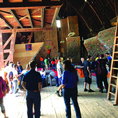
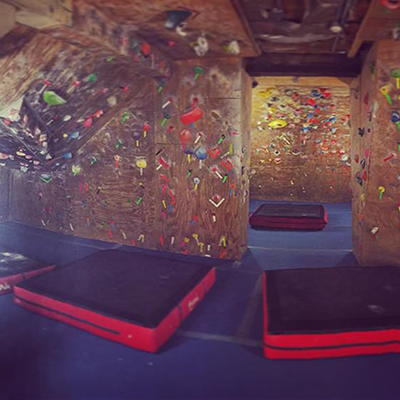
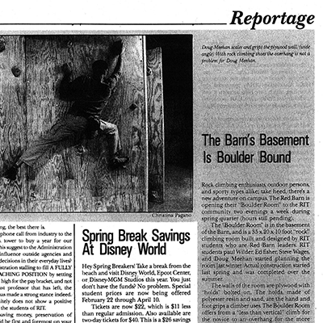
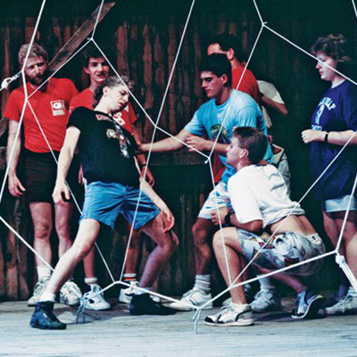

Those who haven't rock climbed much in the past usually think of getting strapped into a harness and climbing to the top of a vertical wall, all while having a trained climber belay them with a rope. However much of climbing can be done without and equipment, other than a mat and a pair of climbing shoes. The Red Barn offers bouldering, which involves climbing routes marked with different colored tape. Below is a video about the classes offered, and what climbing is like.
When climbing, you follow "routes" that have a start and finished hold, both marked with a "V" in tape. In order to complete a route you must hold onto the start hold and only use the rocks marked with the same color tape to get to the finish. At the Red Barn the difficulty of the route is written on the tape of the start hold telling you the recommended climbing level needed to complete it; beginner, intermediate, advanced or expert.
The Red Barn features a large open area on the first floor with top out walls and two high walls. The stairs lead to the basement cave, which features most of the climbing surfaces in the building. There are a range of different angles and overhangs that allow for a ton of different moves and route possibilities. Every Sunday, the management take down all of the routes on one of the walls and replaces them with new problems, keeping the climbing fresh no matter how often you come.
 The indoor climbing facility also offers heat lamps to keep the building warm in the winter, and the large volume of climbers contribute their body heat as well. There is no indoor plumbing or heat/ac units, but there is a port-o-john just outside and plenty of fans keeping the temperature surprisingly well regulated.
RIT's Red Barn is the oldest building on campus. Built in 1908, the Barn belonged to local farmers until RIT purchased the land on which it sat during our transition to the Henrietta campus in 1968. Initially, the Barn's intended use was as a night spot for dances, banquets, concerts and other parties. During the planning phase, which lasted from early spring of 1968 to that same fall, the barn was nicknamed the "Beer Barn." That October, the project of converting the barn into a student activities building was dropped due to cost, in favor of building a student area on what were then picnic grounds.
 Following the halt in conversion plans, Facilities Management Services used the Red Barn to store their equipment until the building was cleaned out to make room for an outdoors adventure program in1982, which included rock climbing. It was only in 2005 that the Red Barn Climbing Gym, as we know it today, was established.
To see the sources of resources used on this page, click here.